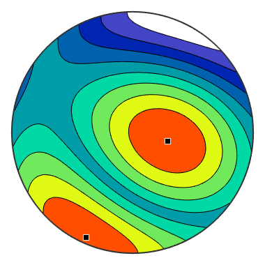
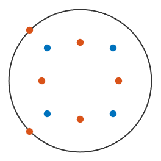
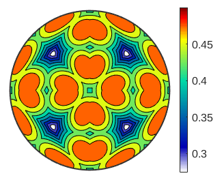
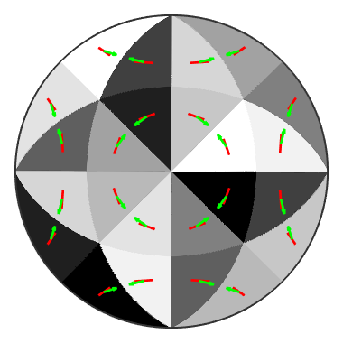
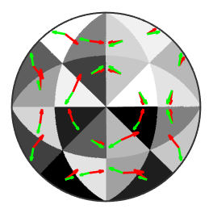
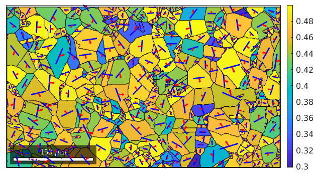
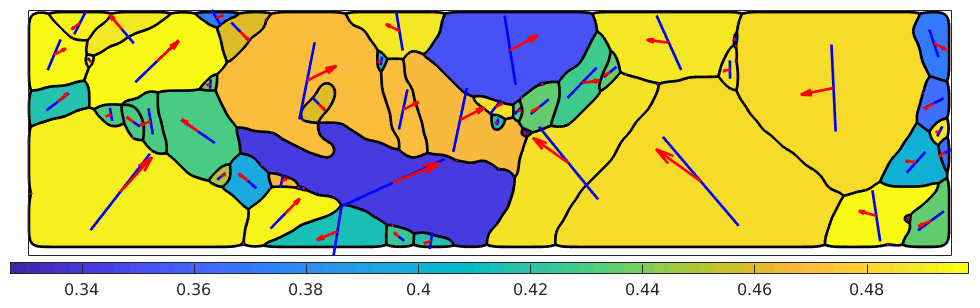

Plastic Deformation
Schmid factor, active slip systems
In this section we describe how to analyze the plastic deformation of crystals using MTEX.
| On this page ... |
| Schmidt factor |
| The Schmid tensor |
| Finding the active slip system |
| Finding the active slip system |
Schmidt factor
Let us assume a Nickel crystal
CS = crystalSymmetry('cubic',[3.523,3.523,3.523],'mineral','Nickel')
CS = crystalSymmetry mineral : Nickel symmetry: m-3m a, b, c : 3.5, 3.5, 3.5
Then for a certain slip plane
m = Miller(1,1,1,CS)
m = Miller size: 1 x 1 mineral: Nickel (m-3m) h 1 k 1 l 1
a certain slip direction orthognal to it
n = Miller(0,-1,1,CS)
n = Miller size: 1 x 1 mineral: Nickel (m-3m) h 0 k -1 l 1
and a simple shear in direction
r = vector3d(0,0,1)
r = vector3d size: 1 x 1 x y z 0 0 1
the Schmid factor is defined by
tau = dot(m,r) * dot(n,r)
tau =
0.4082
The Schmid tensor
In tensor notation the simple shear in direction r can be expressed by the stress tensor
sigma = EinsteinSum(tensor(r),1,tensor(r),2,'name','stress')
sigma = stress tensor rank: 2 (3 x 3) 0 0 0 0 0 0 0 0 1
one the other hand to a certain slip system m,n corresponds a Schmid tensor
R = SchmidTensor(m,n)
R = symmetric Schmid tensor
rank: 2 (3 x 3)
*10^-2
0 -20.41 20.41
-20.41 -40.82 0
20.41 0 40.82
such that the Schmid factor may be computed as
tau = double(EinsteinSum(R,[-1,-2],sigma,[-1,-2]))
tau =
0.4082
the above computation can be easily extended to a list of tension directions
% define a grid of tension directions r = plotS2Grid('resolution',0.5*degree,'upper') % define the coressponding list of simple shear stress tensors sigma = EinsteinSum(tensor(r),1,tensor(r),2,'name','stress tensor') % compute the Schmid factors for all tension directions tau = double(EinsteinSum(R,[-1,-2],sigma,[-1,-2],'name','Schmid factor')); % vizualize the Schmid factors contourf(r,tau) colorbar
r = vector3d size: 181 x 721 resolution: 0.5° plot: true region: upper hemisphere theta: 181 x 721 double rho: 181 x 721 double sigma = stress tensor tensor size: 130501 x 1 rank: 2 (3 x 3)
Finding the active slip system
With slip direction m and slip plane n also all crystallographic symmetric directions and planes which are orthogonal are valid slip systems. Let us determine those equivalent slip systems
% symmetrise m and n [mSym,l] = symmetrise(m,'antipodal'); [nSym,l] = symmetrise(n,'antipodal'); % restrict m and n to pairs of orthogonal vectors [row,col] = find(isnull(dot_outer(vector3d(mSym),vector3d(nSym)))); mSym = mSym(row) nSym = nSym(col) % vizualize crystallographic symmetric slip systems plot(mSym,'antipodal') hold all plot(nSym) hold off
mSym = Miller size: 12 x 1 mineral: Nickel (m-3m) h 1 -1 1 1 1 1 1 -1 -1 1 1 1 k 1 1 1 -1 1 1 1 1 1 -1 1 -1 l 1 1 1 1 1 -1 -1 1 1 1 -1 1 nSym = Miller size: 12 x 1 mineral: Nickel (m-3m) h 0 0 1 1 -1 -1 -1 -1 -1 -1 0 0 k -1 -1 0 0 1 1 0 0 -1 -1 -1 -1 l 1 1 -1 -1 0 0 -1 -1 0 0 -1 -1
Next we compute the Schmid factors for all these slip systems
% define a simple shear stress tensor in 001 direction M = zeros(3);M(3,3) = 1; sigma001 = tensor(M,'name','stress') % and rotate it a bit sigmaRot = rotate(sigma001,rotation('Euler',20*degree,20*degree,-30*degree)) % define a list of Schmid tensors - one for each slip sytem RSym = SchmidTensor(mSym,nSym) % compute a list Schmid factors - one for each slip system tau = double(EinsteinSum(RSym,[-1,-2],sigmaRot,[-1,-2],'name','Schmid factor'))'
sigma001 = stress tensor
rank: 2 (3 x 3)
0 0 0
0 0 0
0 0 1
sigmaRot = tensor
rank: 2 (3 x 3)
*10^-2
1.37 -3.76 10.99
-3.76 10.33 -30.2
10.99 -30.2 88.3
RSym = symmetric Schmid tensor
size: 12 x 1
rank: 2 (3 x 3)
tau =
Columns 1 through 7
0.3785 0.2581 -0.2470 -0.4629 -0.1316 0.2048 0.4936
Columns 8 through 12
-0.2163 0.0418 0.1150 0.2888 -0.3479
we observe that the Schmid factor is always between -0.5 and 0.5. The largest value indicates the active slip system. In the above case this would be the slip system 4
mSym(4) nSym(4)
ans = Miller size: 1 x 1 mineral: Nickel (m-3m) h 1 k -1 l 1 ans = Miller size: 1 x 1 mineral: Nickel (m-3m) h 1 k 0 l -1
Finding the active slip system
All the above steps for finding the active slip system, i.e.,
- find all symmetrically equivalent slip systems
- compute all the Schmid factors
- find the maximum Schmid factor
- find the corresponding slip system
can be preformed by the single command calcShearStress
[tauMax,mActive,nActive,tau,ind] = calcShearStress(sigmaRot,m,n,'symmetrise')tauMax =
0.4936
mActive = Miller
size: 1 x 1
mineral: Nickel (m-3m)
h 1
k 1
l -1
nActive = Miller
size: 1 x 1
mineral: Nickel (m-3m)
h -1
k 0
l -1
tau =
0.3785
0.2581
-0.2470
-0.4629
-0.1316
0.2048
0.4936
-0.2163
0.0418
0.1150
0.2888
-0.3479
ind =
7
This command allows also to compute the maximum Schmidt factor and the active slip system for a list of stress tensors in parallel. Consider again the list of simple stress tensors corresponding to any direction
sigma
sigma = stress tensor tensor size: 130501 x 1 rank: 2 (3 x 3)
Then we can compute the maximum Schmidt factor and the active slip system for all these stress tensors by the singe command
[tauMax,mActive,nActive,tau,ind] = calcShearStress(sigma,m,n,'symmetrise'); % pot the maximum Schmidt factor contourf(r,tauMax); colorbar
% plot the index of the active slip system pcolor(r,ind); mtexColorMap black2white
We can even visualize the active slip system
% take as directions the centers of the fundamental regions r = symmetrise([Miller(1,3,5,CS),Miller(-1,3,5,CS)]); sigma = EinsteinSum(tensor(r),1,r,2) % compute active slip system [tauMax,mActive,nActive] = calcShearStress(sigma,m,n,'symmetrise'); hold on % plot active slip plane in red quiver(r,mActive,'ArrowSize',0.2,'LineWidth',2,'Color','r'); % plot active slip direction in green quiver(r,nActive,'ArrowSize',0.2,'LineWidth',2,'Color','g'); hold off
sigma = tensor size: 96 x 1 rank: 2 (3 x 3)
So far we have always assumed that the stress tensor is already given relatively to the crystal coordinate system. Next we want to examine the case where the stress is given in specimen coordinates and we know the orientation of the crystal. Lets assume we have simple shear stress tensor in 001 direction
M = zeros(3);M(3,3) = 1; sigma001 = tensor(M,'name','stress')
sigma001 = stress tensor rank: 2 (3 x 3) 0 0 0 0 0 0 0 0 1
Furthermore, we assume the orientations to be given by an EBSD map. Thus the next step is to extract the orientations from the EBSD data and transform the stress tensor from specimen to crystal coordinates
mtexdata forsterite % extract the orientations ori = ebsd('Forsterite').orientations; % extract the orientations CS_Forsterite = ori.CS; % transform the stress tensor from specimen to crystal coordinates sigmaCS = rotate(sigma001,inv(ori))
sigmaCS = tensor size : 152345 x 1 rank : 2 (3 x 3) mineral: Forsterite (mmm)
Next we compute maximum Schmidt factor and the active slip system for every orientation in the ebsd data set
% define the slip directions and slip plane normals % (010)[100] % slip direction [100] b = Miller(1,0,0,CS_Forsterite,'uvw'); % slip plane normal (010) n = Miller(0,1,0,CS_Forsterite,'hkl'); [tauMax,mActive,nActive,tau,ind] = calcShearStress(sigmaCS,n,b,'symmetrise'); close all plot(ebsd('Forsterite'),tauMax') colorbar title('Schmidt factors for (010)[100]')

The above procedure may also be applied to grains which has the advantage to be much less computational demanding for large data sets.
% compute grains grains = calcGrains(ebsd) % extract the orientations ori = grains('Forsterite').meanOrientation; % transform the stress tensor from specimen to crystal coordinates sigmaCS = rotate(sigma001,inv(ori)) % compute maximum Schmid factor and active slip system [tauMax,mActive,nActive,tau,ind] = calcShearStress(sigmaCS,n,b,'symmetrise'); plot(grains('Forsterite'),tauMax) colorbar title('Schmidt factors for (010)[100]')
grains = grain2d
Phase Grains Mineral Symmetry Crystal reference frame Phase
0 16334 notIndexed
1 4092 Forsterite mmm
2 1864 Enstatite mmm
3 1991 Diopside 12/m1 X||a*, Y||b, Z||c
Properties: GOS, meanRotation
sigmaCS = tensor
size : 4092 x 1
rank : 2 (3 x 3)
mineral: Forsterite (mmm)
Warning: Plot empty.
 We may also colorize the active slip system.
plot(grains('Forsterite'),ind)Warning: Plot empty.
| DocHelp 0.1 beta |